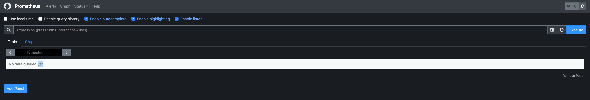
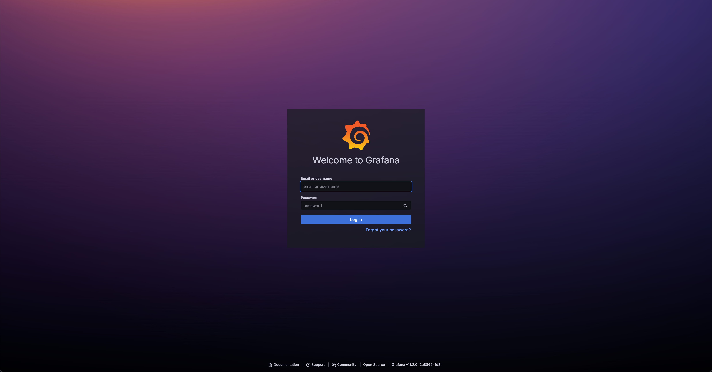
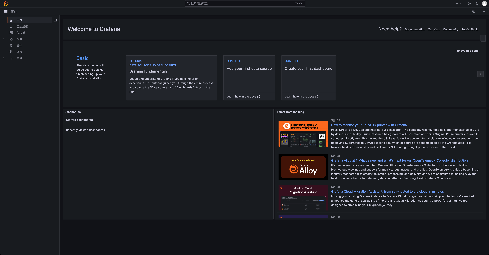

11 | Addons 部署（2）：部署 Prometheus
kube-prometheus 是一整套监控解决方案，它使用 Prometheus 采集集群指标，Grafana 做展示，包含如下组件：
- The Prometheus Operator
- Highly available Prometheus
- Highly available Alertmanager
- Prometheus node-exporter
- Prometheus Adapter for Kubernetes Metrics APIs （k8s-prometheus-adapter）
- kube-state-metrics
- Grafana
其中 k8s-prometheus-adapter 使用 Prometheus 实现了 metrics.k8s.io 和 custom.metrics.k8s.io API，所以不需要再部署 metrics-server。如果要单独部署 metrics-server，请参考：附录D：部署 metrics-server 插件
如果没有特殊指明，本节课的所有操作均在 k8s-01 节点上执行。
在没有安装 Metrics 组件之前，使用 kubectl top pods命令，查看不了监控数据.
$ kubectl top pods
error: Metrics API not available
安装之后，便可以使用 kubectl top pods查看 Pod 的性能指标。
下载和安装 Prometheus
cd /opt/k8s/work
git clone -b v0.14.0 https://github.com/coreos/kube-prometheus.git
cd kube-prometheus/
kubectl apply --server-side -f manifests/setup
kubectl wait \
--for condition=Established \
--all CustomResourceDefinition \
--namespace=monitoring
kubectl apply -f manifests/
查看运行状态
$ kubectl -n monitoring get pods
NAME READY STATUS RESTARTS AGE
alertmanager-main-0 2/2 Running 0 61m
alertmanager-main-1 2/2 Running 0 61m
alertmanager-main-2 2/2 Running 0 61m
blackbox-exporter-86745676c9-8npl7 3/3 Running 0 61m
grafana-599bb4cc9d-9gsnl 1/1 Running 0 61m
kube-state-metrics-6f46974967-brcl8 3/3 Running 0 61m
node-exporter-5ng76 2/2 Running 0 61m
node-exporter-n9x5x 2/2 Running 0 61m
prometheus-adapter-784f566c54-mzdfw 1/1 Running 0 61m
prometheus-adapter-784f566c54-n9psh 1/1 Running 0 61m
prometheus-k8s-0 2/2 Running 0 61m
prometheus-k8s-1 2/2 Running 0 61m
prometheus-operator-57b579d5b9-r25xf 2/2 Running 0 61m
测试 kubectl top命令是否能够获取 Pod 的运行指标：
kubectl top pods -n monitoring
NAME CPU(cores) MEMORY(bytes)
alertmanager-main-0 2m 40Mi
alertmanager-main-1 10m 24Mi
alertmanager-main-2 1m 37Mi
blackbox-exporter-86745676c9-lpksm 0m 37Mi
grafana-599bb4cc9d-6xnlb 5m 101Mi
kube-state-metrics-6f46974967-29278 5m 67Mi
node-exporter-bcg9n 2m 30Mi
node-exporter-lmr58 18m 32Mi
prometheus-adapter-784f566c54-ht2fh 3m 40Mi
prometheus-adapter-784f566c54-wq787 30m 19Mi
prometheus-k8s-0 15m 400Mi
prometheus-operator-57b579d5b9-tkvmk 2m 46Mi
访问 Prometheus UI
启动服务代理：
$ kubectl port-forward --address 0.0.0.0 pod/prometheus-k8s-0 -n monitoring 9090:9090
Forwarding from 0.0.0.0:9090 -> 9090
- port-forward 依赖 socat。
浏览器访问：http://公网IP:9090。访问界面如下：

访问 Grafana UI
启动代理：
$ kubectl port-forward --address 0.0.0.0 svc/grafana -n monitoring 3000:3000
Forwarding from 0.0.0.0:3000 -> 3000
浏览器访问：http://公网IP:3000。访问界面如下：

用 admin/admin 登录。然后，就可以看到各种预定义的 dashboard 了，界面如下：
